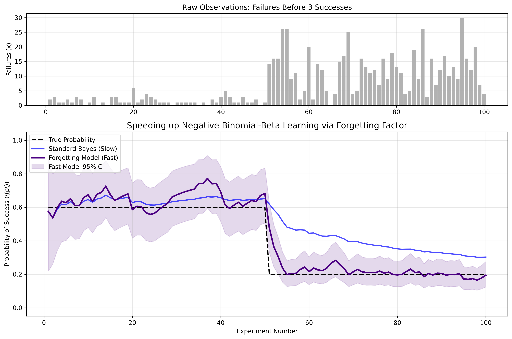

Negative Binomial-Beta Conjugate Models with Exponential Forgetting
In Chapter 3, we explored the Geometric distribution, which models the number of failures before the first success. But what if we need to achieve a certain number of successes before we stop?
The Negative Binomial distribution models the number of failures \(x\) that occur before we achieve a target of \(r\) successes. This is used in A/B testing (e.g., "How many users must fail to convert before we get 5 conversions?"), in quality control, and in modeling over-dispersed count data.
We want to estimate the underlying probability of success, \(p\), given that we observed \(x\) failures before achieving \(r\) successes.
The probability of observing exactly \(x\) failures before the \(r\)-th success is:
Because \(p\) is a probability, the conjugate prior remains the Beta distribution with parameters \(\alpha\) and \(\beta\):
Multiplying the Likelihood and the Prior yields:
The update rule is a beautiful generalization of the Binomial and Geometric models:
As always, the standard Bayesian model assumes stationarity. If the true success rate \(p\) suddenly drops (meaning it takes many more failures to reach our target \(r\)), the standard model will stubbornly cling to its historical parameters.
To make it adaptive, we introduce a forgetting factor \(f\) before adding the new observations:
By discounting the historical \(\alpha\) and \(\beta\), the model quickly "forgets" the era of high success rates and adapts to the new, lower probability of success.
In this simulation, we want to achieve \(r=3\) successes. Initially, the true probability of success is 60% (so we expect few failures). At experiment 50, the system changes, and the true probability drops to 20% (so we expect many more failures).

import numpy as np
import matplotlib.pyplot as plt
from scipy.stats import beta
import os
# Ensure the images directory exists
os.makedirs('images', exist_ok=True)
class FastOnlineNegativeBinomialModel:
def __init__(self, alpha_prior=1.0, beta_prior=1.0, target_successes=3, forgetting_factor=1.0):
self.alpha = alpha_prior
self.beta = beta_prior
self.r = target_successes
self.ff = forgetting_factor
def update(self, failures):
# Apply forgetting factor to old memory, then add new data
self.alpha = (self.alpha * self.ff) + self.r
self.beta = (self.beta * self.ff) + failures
def get_expected_probability(self):
return self.alpha / (self.alpha + self.beta)
def get_credible_interval(self, confidence=0.95):
lp = (1.0 - confidence) / 2.0
up = 1.0 - lp
return beta.ppf(lp, self.alpha, self.beta), beta.ppf(up, self.alpha, self.beta)
# 1. GENERATE DATA (True prob drops from 0.6 to 0.2 at step 50)
np.random.seed(42)
n_steps = 100
target_r = 3
true_p_phase1 = 0.6
true_p_phase2 = 0.2
data_list = []
for i in range(n_steps):
true_p = true_p_phase1 if i < 50 else true_p_phase2
# np.random.negative_binomial(n, p) returns the number of failures before n successes
failures = np.random.negative_binomial(target_r, true_p)
data_list.append(failures)
# 2. INITIALIZE MODELS
# Standard Model (No forgetting)
standard_model = FastOnlineNegativeBinomialModel(target_successes=target_r, forgetting_factor=1.0)
# Fast Model (Forgetting old data)
fast_model = FastOnlineNegativeBinomialModel(target_successes=target_r, forgetting_factor=0.85)
# Lists for plotting
std_probs, fast_probs = [], []
fast_lb, fast_ub = [], []
# 3. RUN SIMULATION
for failures in data_list:
standard_model.update(failures)
fast_model.update(failures)
std_probs.append(standard_model.get_expected_probability())
fast_probs.append(fast_model.get_expected_probability())
lb, ub = fast_model.get_credible_interval()
fast_lb.append(lb); fast_ub.append(ub)
# 4. PLOT
fig, (ax1, ax2) = plt.subplots(2, 1, figsize=(12, 8), gridspec_kw={'height_ratios': [1, 2]})
# Top plot: Raw Failures
ax1.bar(range(1, n_steps + 1), data_list, color='gray', alpha=0.6)
ax1.set_title(f'Raw Observations: Failures Before {target_r} Successes', fontsize=12)
ax1.set_ylabel('Failures (x)')
ax1.grid(True, alpha=0.3)
# Bottom plot: Probability tracking
ax2.plot(range(1, n_steps + 1), [0.6]*50 + [0.2]*50, 'k--', linewidth=2, label='True Probability')
# Plot BOTH models for comparison
ax2.plot(range(1, n_steps + 1), std_probs, 'b-', linewidth=2, alpha=0.7, label='Standard Bayes (Slow)')
ax2.plot(range(1, n_steps + 1), fast_probs, 'indigo', linewidth=2.5, label='Forgetting Model (Fast)')
ax2.fill_between(range(1, n_steps + 1), fast_lb, fast_ub, color='indigo', alpha=0.15, label='Fast Model 95% CI')
ax2.set_title('Speeding up Negative Binomial-Beta Learning via Forgetting Factor', fontsize=14)
ax2.set_xlabel('Experiment Number')
ax2.set_ylabel(r'Probability of Success (\(p\))')
ax2.set_ylim(-0.05, 1.05)
ax2.legend(loc='upper left')
ax2.grid(True, alpha=0.3)
plt.tight_layout()
# Save to the images folder
plt.savefig('images/negative_binomial_graph.png', dpi=300, bbox_inches='tight')
plt.show()